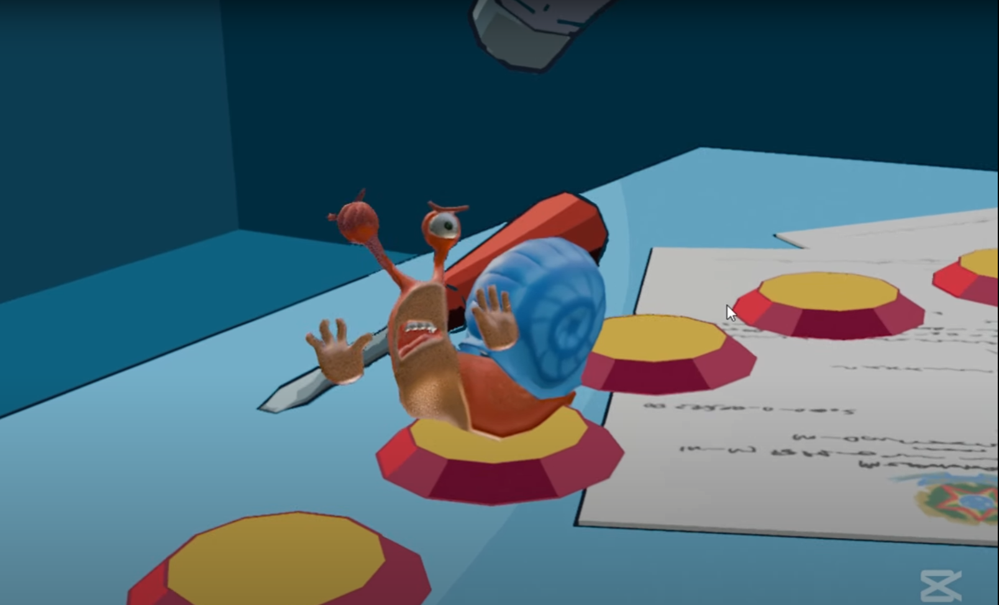
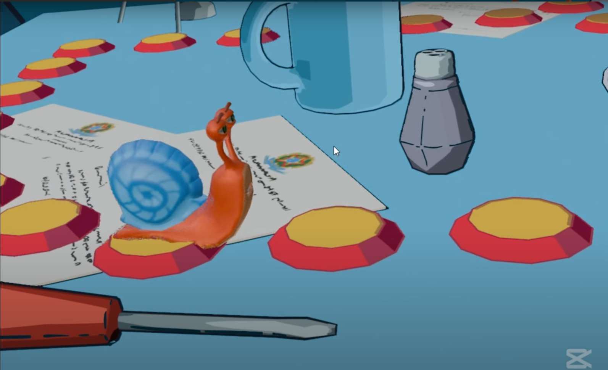
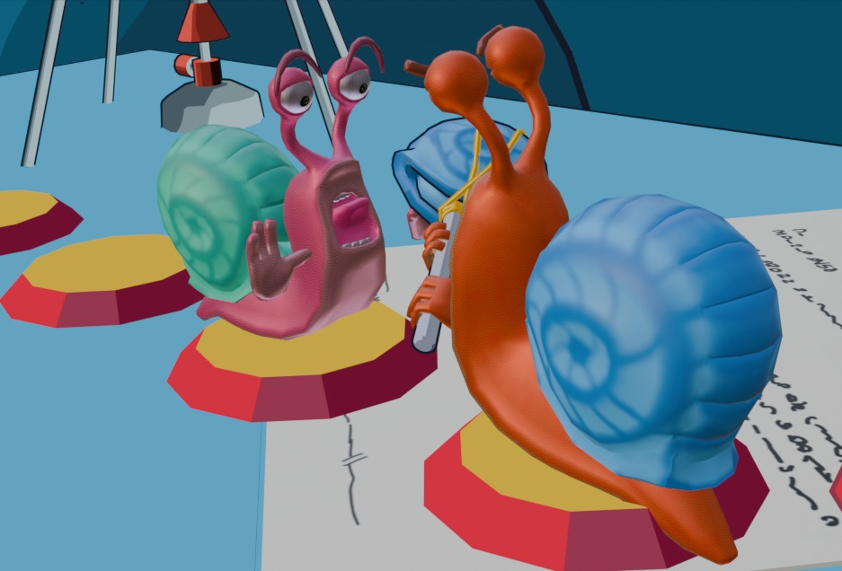
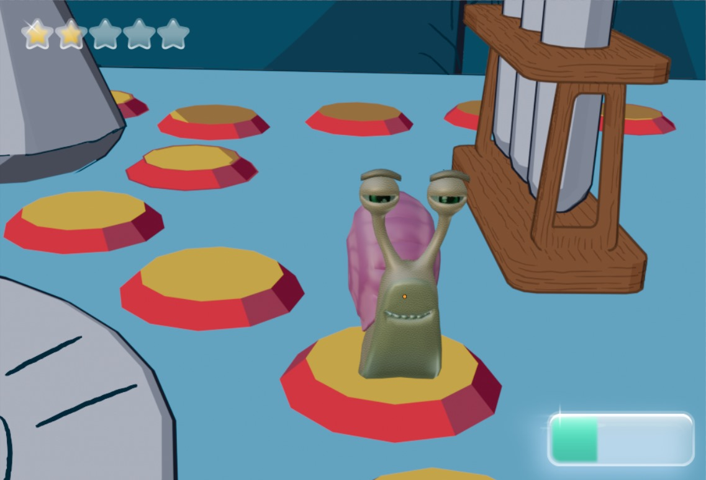
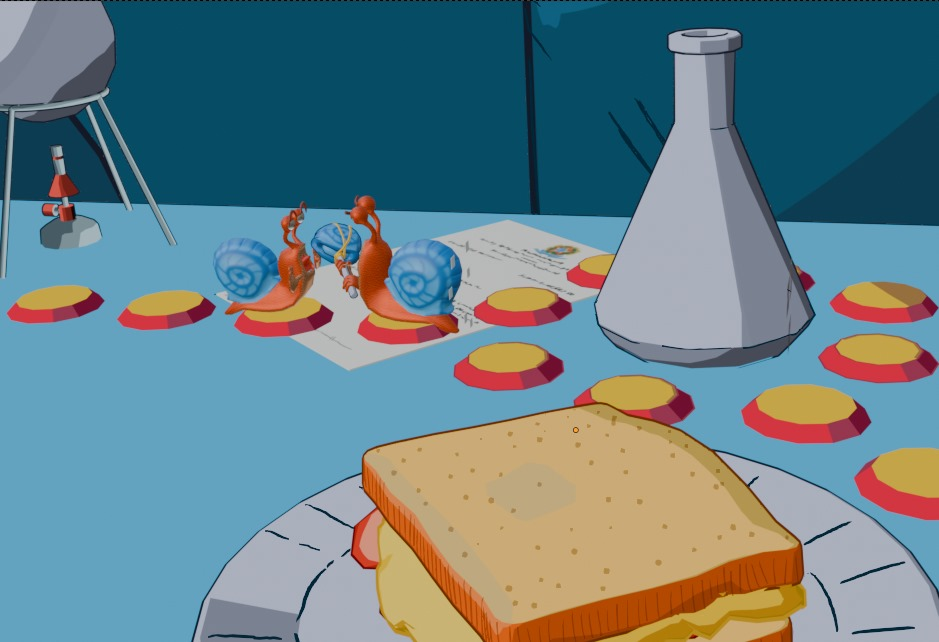
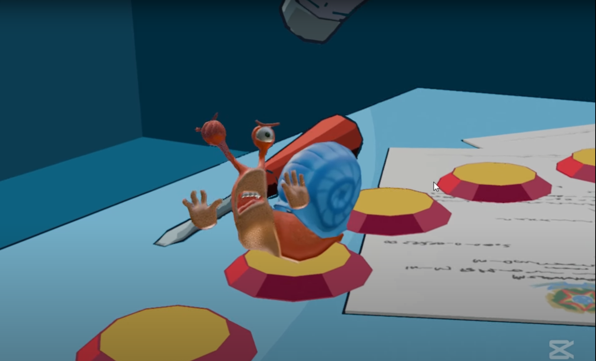
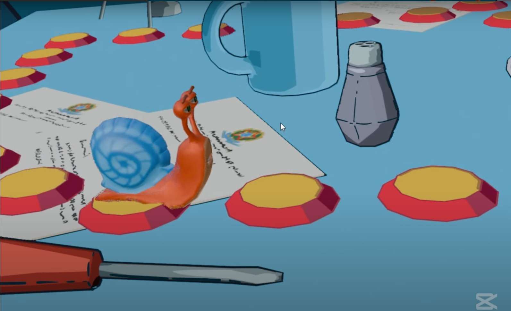
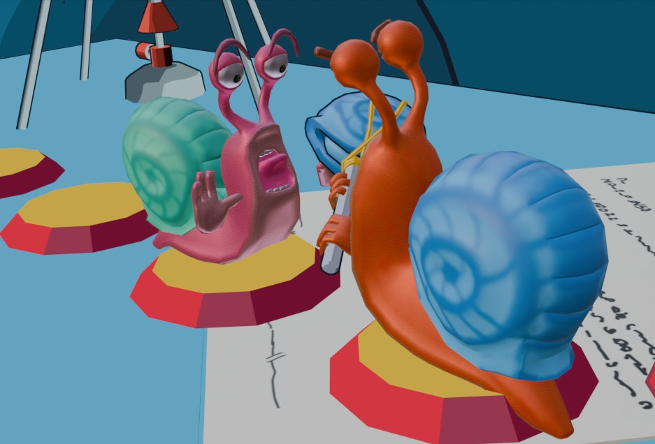
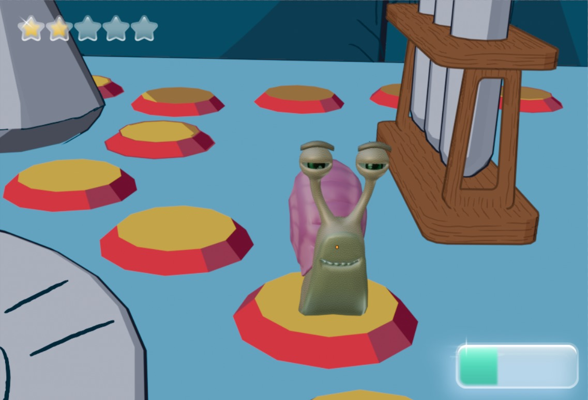
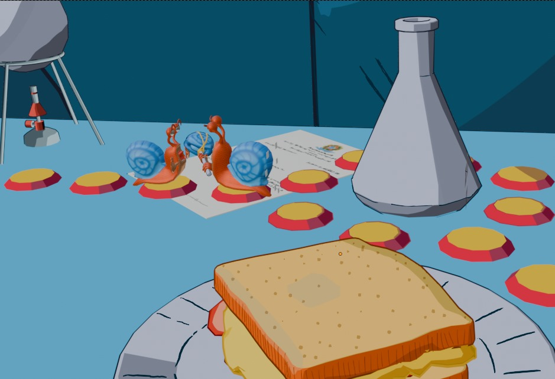

Previous Page
Previous Page
Previous Page
Previous Page
Welcome to the project page for the Snails Party Game! Here you'll find images, videos, and details about the gameplay, design, and development process.
 









Snails Party is a multiplayer party game made for 4 up to 8 players.
Play either friends or AI, using a variety of itens, minigames and much more to make it an even more unique experience.
Online multiplayer
Character customization
Level system
Itens and Inventory
Development Status: Set to release 2025.
Engine and Programming Language: Unity, C#.
I've developed the multiplayer module using Photon Fusion, ensuring smooth synchronization across player interactions, game logic, and animations.
Crafting a robust and intuitive UI system was another crucial focus, making the game accessible and visually engaging.
Game States were meticulously designed to manage transitions between player turns, mini-games, and board progression seamlessly.
I've also worked on the animation blending, aiming for smoother transitions.
My role also touches game design, as in the balacing of the game; I've developed the item's effects and power levels, and balaced via playtests.